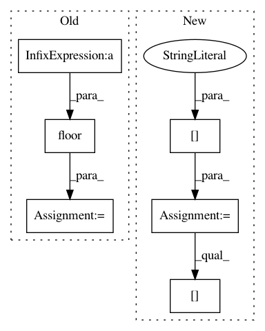

6dad4c27ab4ffa96e0b699b8d5925fbe2a1f9d38,onnx_tf/handlers/backend/upsample.py,Upsample,version_7,#Any#Any#,34
Before Change
attrs = copy.deepcopy(node.attrs)
scales = attrs["scales"]
new_height = np.floor(x_shape[2] * scales[2])
new_weight = np.floor(x_shape[3] * scales[3])
mode = attrs.get("mode", "nearest")
if mode.lower() == "bilinear" or mode.lower() == "linear":
mode = tf.image.ResizeMethod.BILINEAR
After Change
[scales])
with tf.control_dependencies([assert_n_c_scale_is_one]):
h_w_scale = scales[2:]
h_w_shape = x_shape[2:]
new_h_w_shape = tf.cast(h_w_scale * tf.cast(h_w_shape, type(h_w_scale[0])),
tf.int32)
mode = attrs.get("mode", "nearest")
In pattern: SUPERPATTERN
Frequency: 3
Non-data size: 6
Instances
Project Name: onnx/onnx-tensorflow
Commit Name: 6dad4c27ab4ffa96e0b699b8d5925fbe2a1f9d38
Time: 2020-10-22
Author: pluradj@us.ibm.com
File Name: onnx_tf/handlers/backend/upsample.py
Class Name: Upsample
Method Name: version_7
Project Name: mozilla/bugbug
Commit Name: f16992b25bb153df3ab87c5111db2a101cf68c73
Time: 2020-04-09
Author: mcastelluccio@mozilla.com
File Name: bugbug/models/testselect.py
Class Name: TestSelectModel
Method Name: train_test_split
Project Name: ncullen93/torchsample
Commit Name: a7d92f7020dfe8854430ef13ed2923b2606a6262
Time: 2017-05-11
Author: ncullen.th@dartmouth.edu
File Name: torchsample/utils.py
Class Name:
Method Name: th_random_choice